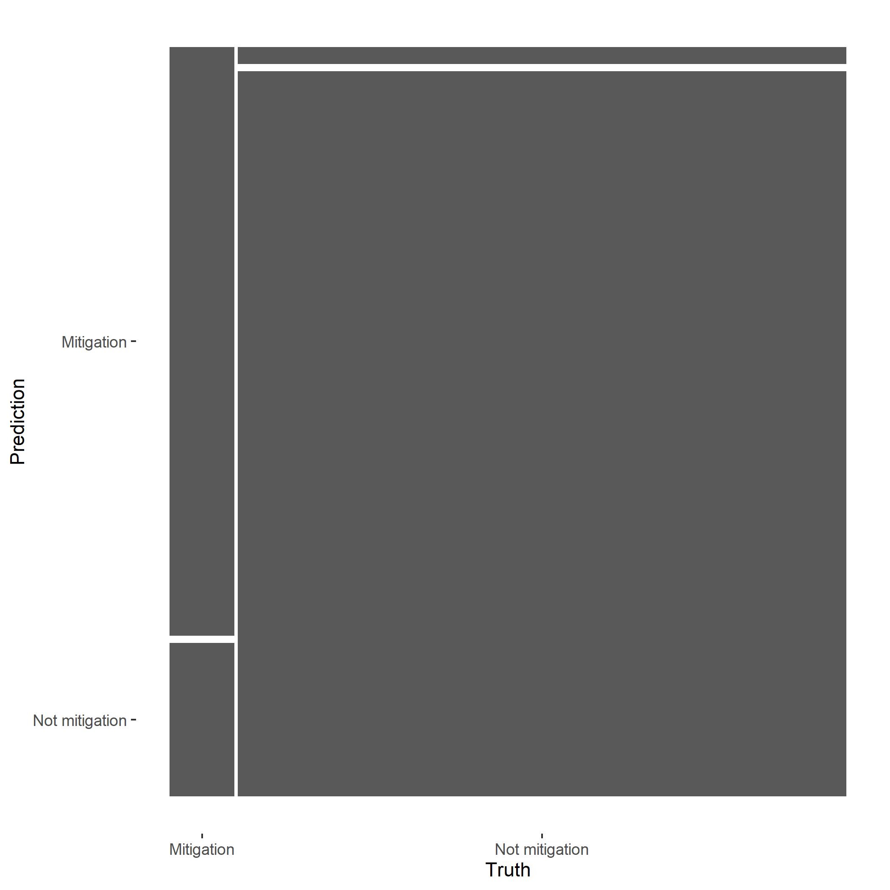

Norwegian development aid statistics from 1960 onwards are available to download from Access to microdata. We select last ten years (2011-2021). These data can also be downloaded by using this link. The csv file is saved in the the data folder in the project directory and named Norad-Norwegian_development_assistance.
Let’s import the csv file. We use the data for the years 2013-2018.
The basic observation unit in the dataset are the individual agreements, identified by the unique agreement_number. Agreements can multi-year and also be financed from multiple budget lines. Therefore the basic observation unit is: agreement-by-budgetpost-by-year. An agreement can therefor be registrered multiple times in the dataset, if it is a multi-year agreement and/or the agreements is financed over multiple budget lines the same year.
Unique agreement observations to avoid data leakage into the testing set
We want to avoid data leakage when training the model, meaning that we want to keep the training data separate from the testing data. However, this also means that we should only include unique agreement observations in the training/testing data. If not, statistical information for a multi-year agreement could be in included in both the tran set and the test set and then overestimate the models performance. The testing data would then not be really new data. We therefore include only one observation for each agreement in the training/testing data. For the time period 2013-2017 the total observations are X. However, when we only include unique agreement_numbers the number of unique agreement observations are redused to X.
To train the model we want to include, identified by tha variable agreement_number.
Initial data transformation: outcome variable and predictors
We create a dichotomous outcome variable mitigation based on the existing variable policy_marker_climate_change_mitigation. The levels 2 (main objective) and 1 (significant objective) are collapsed to one level Mitigation.
We create a character variable containg the text information from two variables, agreement_title and description_of_agreement The character strings are collapsed into one.
We exclude non-english characters from all character variables. This is to avoid errors using special non-english characters, like spanish letters for excample in the variable agreement_partner.
We keep most of the variables in the dataset to be used as predictors in the model. We exclude all policy markers as these are often quality checked at the same time.
The data split into traing set and testing set. The split is stratified on the mitigation variable. This ensures that our training and test data sets will keep roughly the same proportions of mitigation and not relevant agreements as in the original data.
We create a set of 10 cross-validation resampling folds of the trainind data to evaluate the model. For each of the ten folds the model will train and evaluate.
First, we specify the model. The mitigation as outcome and all other variables are predictors. We also specify the training data.
We upgrade the role of agreement_number to an id-variable. Instead of getting rid of the id we update the role. Instead of being a predictor or outcome variable, this is an ID, and not used in the model.
Preprocessing steps for the predictor variable title_desc:
We tokenize the title_desc variable using ordinary tokenization by splitting words by space. This creates a dummy variable for each token in the variable and count the presence of each token in each “document” (title_desc).
We remove stopwords to eliminate words that are so commonly used that they carry very little useful information, like a, the and is.
We dont want to keep all the tokens, but keep the top 1000 used tokens.
We want to weight the token (word) counts by using TF-IDF (Text Frequency-Inverse Document Frequency) for each token. TF-IDF is a weight to measure the importance of a token in the document and corpus (collection of documents).
Other preprocessing steps:
We normalize all the numeric predictors as this is required in some models.
We convert all character variables to factors. Both output and predictor variables. This is needed for some preprocessing steps.
The variables agreement_partner and implementing_partner have very many factor levels. We collapse less used partners in a “other”-level and specify a treshold for this level so that we keep only around 200 levels (partners).
We convert all factor or character variables to binary numeric variables (dummy variables).
We transform all the nominal predictors to factors by creating dummy variables. Also we specify that unseen factor levels will be assign with a new value. Also we deal with missing (unknown) data, and we remove factor levels with zero variance.
We handle the class imbalance in the outcome variable by using oversampling. Oversampling and undersampling can be helpful to deal with such class imbalanse to avoid poorly perfonmanse on the minority class. We oversample the “mitigation” level in the mitigation variable using the method Synthetic Minority Over-sampling Technique (SMOTE).
Let’s have a look at the training data after these preprocessing steps. The recipe() defines the preprocessing, the prep() calculates statistics from the training set, and bake() applies the preprocessing to data sets. These preprocessing steps are applied under the hood in the model, but it’s useful to have a look to at the preprocessing.
We build a model workflow where we put both the data recipe for preprocessing and the model specification.
Code
# Random forest# rf_wf <- workflow() |># add_recipe(oda_rec) |># add_model(rf_spec)# Random forest tune hyperparametersrf_wf_tune <-workflow() |>add_recipe(oda_rec) |>add_model(rf_spec_tune)
Fit a model
We fit the model workflow (preprocessing and model) on the training set (using resampling).
Code
# Fit a random forest model## doParallel::registerDoParallel()# # set.seed(1)# rf_res <- fit_resamples(# rf_wf,# resamples = oda_folds,# metrics = metric_set(accuracy, recall, precision, roc_auc, sens, spec),# control = control_resamples(save_pred = TRUE)# )# Fit a random forest model with hyperparametersstart_time <-Sys.time()doParallel::registerDoParallel()set.seed(1)rf_tune_res <-tune_grid( rf_wf_tune,resamples = oda_folds,metrics =metric_set(accuracy, recall, precision),control =control_resamples(save_pred =TRUE),grid =2 )end_time <-Sys.time()time <- end_time - start_time
Evaluate performance
How did the model perform? Let’s have a look at the resampling performance metrics. We can visualize these results using a confusion matrix.
Code
# Random forest# rf_res_metrics <- collect_metrics(rf_res)# # rf_res_truefalse <- rf_res |> # conf_mat_resampled(tidy = FALSE)# # rf_res_autoplot <- rf_res_truefalse |> # autoplot()# Random forest with hyperparameter tuningcollect_metrics(rf_tune_res)best_accuracy <-select_best(rf_tune_res, "accuracy")
Finalizing our model
Finally, let’s make a final workflow, and then fit and evaluate the model one last time. We use the function last_fit() to fit the final model on the full training data set and evaluates the finalized model on the testing data set. We just need to give this funtion our original train/test data split. This is the first time we have used the testing data. The purpose of the testing data is to estimate the model performance we expect to see with new data.
Code
# final_res <- last_fit(# rf_wf,# split = oda_split,# metrics = metric_set(accuracy, recall, precision, roc_auc, sens, spec)#)# # collect_metrics(final_res) # Metrics evaluated on the testing data. No sign of overfitting.# # final_res_autoplot <- collect_predictions(final_res) |> # conf_mat(mitigation, .pred_class) |> # autoplot()# Fit final model with best tuning parametersfinal_rf <-finalize_model( rf_spec_tune, best_accuracy)final_wf <-workflow() |>add_recipe(oda_rec) |>add_model(final_rf)final_res <- final_wf |>last_fit(oda_split)final_res |>collect_metrics()p_final_res <- final_res |>collect_predictions() |>conf_mat(mitigation, .pred_class) |>autoplot()#ggsave(here("figs", "p_final_res.png"))
The performance metrics from the test set indicate that we did not overfit during the training procedure.

Make predictions using the workflow
The final_res object contains a finalized, fitted workflow that can be used for predicting on new data. We can extract this object.
Code
# Extract final fitted workflow used to train the algoritm#final_workflow <- extract_workflow(final_res)# Predict on testing data#augment(final_workflow, new_data = oda_test[1,])# Extract final fitted workflow used to train the algoritmfinal_wf <-extract_workflow(final_res)augment(final_wf, new_data = oda_test[1,])
We can save this fitted final_wf() object to use later with new data.